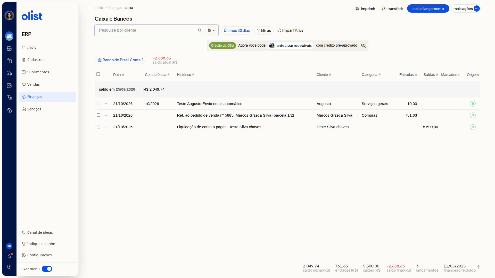

Como imprimir relatório no Caixa e Bancos
Descrição
Na tela Caixa e Bancos do ERP da Olist, você consulta os lançamentos da conta selecionada e imprime o relatório.
O caminho é Finanças > Caixa. A impressão fica em Mais ações > Imprimir relatório.
Pré-requisitos
Você precisa da permissão de Caixa para acessar a tela Caixa e Bancos.
A conta de caixa ou banco já deve estar selecionada na lista. O nome da conta e o saldo atual aparecem no topo.
Instruções
-
Acesse Finanças > Caixa.

-
Clique em Mais ações.

-
Clique em Imprimir relatório.
Links relacionados
Se precisar de ajuda, fale com o suporte.